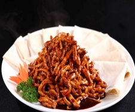

Orange Chicken

Orange chicken is a delicious dish, the main ingredients are chicken leg, orange, peeled onion.
- Peel off the skin from the chicken leg , cut the meat into appropriate pieces, add a small spoon of
sugar, add a small spoon of salt, mix well and set aside
- Peel the oranges, orange peel and meat are good things
- Take a small milk pan, add orange peel , add half a bowl of water, add a little sugar, boil for a
while, pour it out of the fire and put in a bowl for later use
- While cooking the orange peel juice, you can use another pot at the same time to heat up the chicken
- Put on wok, high fire, one scoop of salad oil, oil hot, add chicken, stir fry, then add onion,
orange peel juice, add a little sugar, a little salt, thicken, drizzle a small tea spoon , Off the
fire, add orange meat at the end, mix well, place on a plate, and turn into
Boiled fish
Boiled fish, also known as river river boiled fish , boiled fish , first popular in Chongqing Yubei
District Cuiyun Township.
Boiled fish is usually made from fresh grass carp, bean sprouts, and peppers. "Oil without greasy, spicy
without dryness, hemp without bitterness, and tender meat" are its characteristics.
- Kill the fish, wash it, chop the head and tail, slice into fish fillets, and chop the remaining fish
steak into pieces. Grab the fish fillets with a little salt, cooking wine, raw flour and one egg
white, and marinate for 15 minutes
- Boil a small pot of water, put the cleaned bean sprouts in the boiling water, blanch them in a large
pot, sprinkle a little salt according to personal taste, and set aside.
- Add three times the usual oil to the wok. After the oil is hot, add three tablespoons of watercress
(or chopped pepper) to sauté. Add ginger, garlic, shallots, peppercorns, paprika, and dried red
pepper. fry. Add the head and tail and fish steak after the taste, turn to high heat, stir well, add
the right amount of cooking wine and soy sauce, pepper, sugar, continue to stir for a while, add
some hot water, and add salt and MSG to taste. Wait for the water to boil, keep the fire high, put
the fish fillets piece by piece, use chopsticks to disperse, and turn off the fire for 3 to 5
minutes. Pour the boiled fish and the whole soup into the large bowl that has just been filled with
bean sprouts.
- Take another pot and pour half a catty of oil (when the oil is poured into a large pot, submerge all
the fish and bean sprouts). When the oil is hot, turn off the heat and let it air. Then add
peppercorns and dried peppers, and slowly fry the aroma of peppercorns and peppers over low heat.
Note that the fire should not be too large, so as not to be confused.
- When the color of the pepper is changing quickly, turn off the heat immediately, and pour the oil in
the pot with the pepper and pepper into the large bowl of fish.
Fried potato slices
Fried potato shreds is a common homemade dish. Potatoes are the main raw material. Potatoes are cut into
thin filaments and served with other green peppers , onions and other side dishes. The taste is mellow,
salty and smooth, and the texture is tender.
- After the potatoes are peeled, cut them into stick-like filaments
- Rinse the potato filaments in the water and filter them out on a bamboo skewer
- Carrots are also cut into the same silk
- Cut the shallots into green onions.
- Put the oil in the pan, heat, add potatoes, carrots, ginger, stir-fry, and sprinkle with pepper
- Then add wine, salt, sugar and mix well
- into the plate, sprinkle with green onions
Beijing sauce pork

Beijing sauce shredded pork is a well-known dish, it is one of the classic dishes in Beijing cuisine .
During the production process, lean pork meat is used as the main ingredient, supplemented with sweet
noodle sauce , spring onion , ginger, and other seasonings. It is prepared by using " spicy explosion",
one of the "six explosions" unique to northern cooking techniques . [1] After cooking, it is moderately
salty and sweet, rich in sauce, and unique in flavor.
- Cut the pork into shreds, add 1 tablespoon of cooking wine, 1/5 tablespoon of salt, 1/2 egg whites,
1 tablespoon of raw flour and 1/3 tablespoon of chicken flour, and marinate for 15 minutes.
- Wash the onions and tails, cut the onion white into filaments, and spread them on the plate for
later use. Take 1/3 of the bowl of water, add a little ginger slices and onion, and mix well to make
onion and ginger water.
- Heat 3 tablespoons of oil, stir in pork shreds until the flesh turns white, and set aside for use;
mix 1/2 tablespoon of raw flour and 3 tablespoons of water into a powdered water.
- Continue adding 1 tablespoon of oil to heat, add 3 tablespoons of sweet noodle sauce and stir-fry.
Add 1/2 tablespoon of cooking wine, 1/2 tablespoon of chicken powder, 1/3 tablespoon of white sugar
and green onion and ginger and boil.
- Pour in shredded pork and mix well, so that the sauce is evenly wrapped on the shredded pork, pour
in raw water and thicken to make the sauce thick.
- Raise the shredded pork, place it in a plate with onion shreds, mix well and serve.